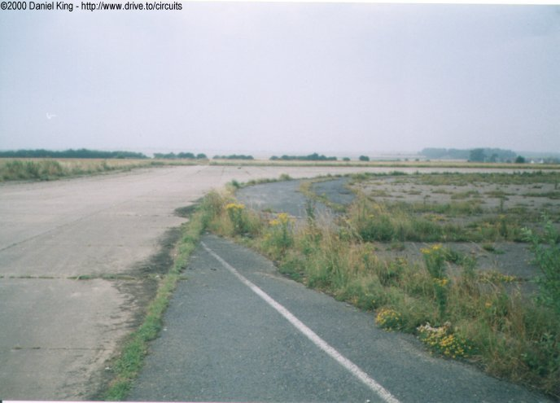
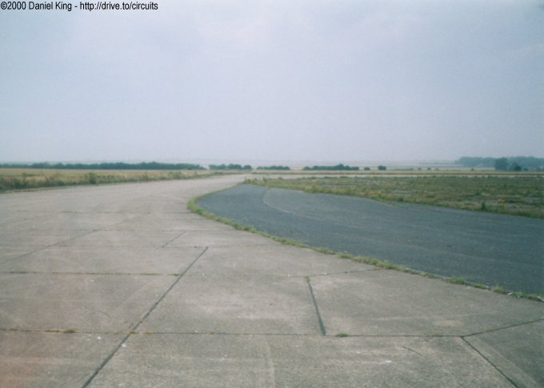
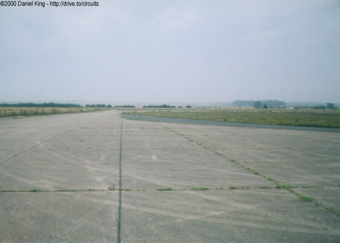

Numbers indicate where the pictures were taken. Click links above.
Second Turn
|| Contents | 1 | 2 | 3 | 4 | 5 | 6 | Home ||
Numbers indicate where the pictures were taken. Click links
above.
| Shown below from the exit of the first corner, the second turn was a quick 90° sweeping right-hander which led out onto the back of the paddock. The surface is the original concrete from the second world war airfield which was located on the site. As a result, the surface is extremely bumpy, especially when compared to the asphalt covered front straight. |


